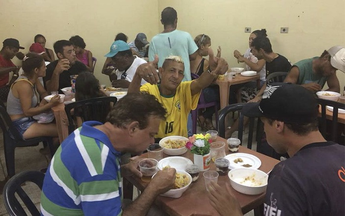

SÃO SEBASTIÃO PRECISA DE AJUDA
Amigos contra a fome

Precisamos de:
- Alimentos não perecíveis
- Água mineral
- Embalagens para marmitas
Salva patas
Precisamos de:
- Ração para cães e gatos
- Coleiras de tamanhos diversos
- Água potável
Mutirão de limpeza de São Sebastião
Precisamos de:
- Desinfetante e água sanitária
- Rodos grandes e panos de chão
- Esponjas, escovas e afins